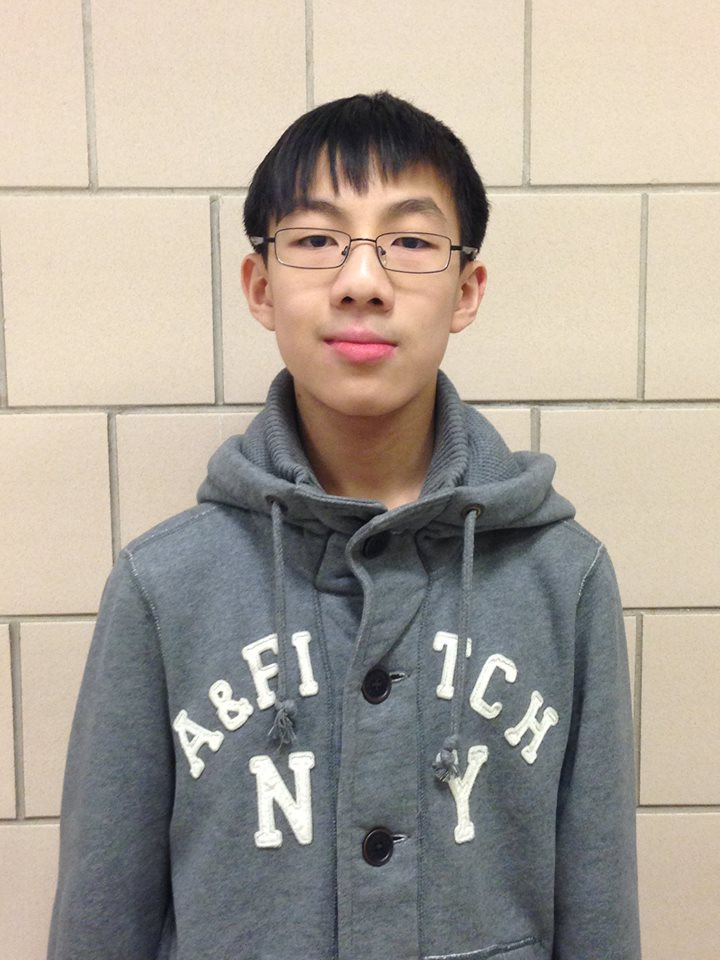
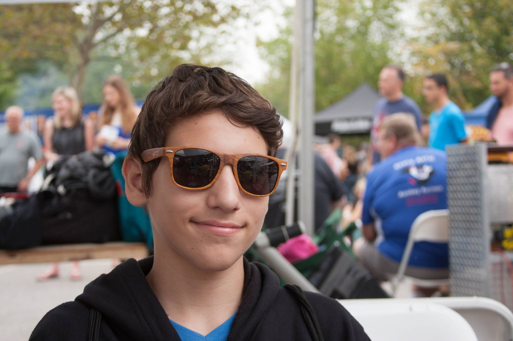

Click on a tab to meet the team members.
James Chin - Head of Engineering
|
 I've always loved engineering, and I currently base my entire life
around it. Not only have I been a member of my FTC team for 2 years,
I have also mentored a total of three FLL teams in the last two
years,
and I plan to mentor 2-3 additional teams this coming year. I also
build things on my free time, for myself and others. The amount of
time, money, and effort I have put into engineering is astronomical
compared to the time I've spent doing anything else. My biggest
drive to continue working towards my engineering goals is that
someday, I wish to spread the ideals of STEM to my community.
The feeling you get when you make something all by yourself, or
design something that works is the best feeling in the world, and
I want to share that with as many people as I can. When I was
younger, I didn't have many opportunities to make things outside
of arts and crafts, so I want to give others the opportunities
that I wish I had. My other interests include piano, tennis, and
programming.
I've always loved engineering, and I currently base my entire life
around it. Not only have I been a member of my FTC team for 2 years,
I have also mentored a total of three FLL teams in the last two
years,
and I plan to mentor 2-3 additional teams this coming year. I also
build things on my free time, for myself and others. The amount of
time, money, and effort I have put into engineering is astronomical
compared to the time I've spent doing anything else. My biggest
drive to continue working towards my engineering goals is that
someday, I wish to spread the ideals of STEM to my community.
The feeling you get when you make something all by yourself, or
design something that works is the best feeling in the world, and
I want to share that with as many people as I can. When I was
younger, I didn't have many opportunities to make things outside
of arts and crafts, so I want to give others the opportunities
that I wish I had. My other interests include piano, tennis, and
programming.
|
Andrew Xu - Engineer
|
|
Hi, I'm Andrew of Team 310, Stuy Fission.
I like to swim, play
video games, work out puzzles, and hang out with friends. Ever
since I was little I've been surrounded by people who like to
work with their hands, and play with things like Lego. Maybe
that's a reason why now engineering interests me, and why I
want to learn more about it. On the team I hope to gain more
experience and have fun while also learning about design and
functionality. Building a competition-ready robot with my team
and seeing it succeed in many ways adds another page in my
book.
|
Jason Chua - Engineer
|
|

I loved playing with Lego and
KNex when I was younger, and still do love toying around
with them today. As I grew older, I became fascinated with
machines and engineering. In my middle school, there was
a club for robotics where we made different things with
Lego Mindstorms and learned the basics of engineering, but
we never got to a competitive level. I also want to become
an engineer when I grow up! All of these reasons are why I
chose to join Stuy Fission. Being on the team is a very fun
and educational experience!
|
Thomas Ly - Engineer
|
|
Hello my name's Thomas Ly and
I'm a part of Team 310 of Stuyvesant Robotics. As I grew up
I was always fascinated by technology and the miracles it
could create. As a grew up I found myself wanting to interact
with technology and perhaps perform some miracles of my own. A
few years ago after reading a few articles about prosthetic
limb research I became interested in machinery and many uses
that came with it. So when I heard about a club in my high
school that focused primarily on building robots I joined in.
Now I hope to gain more experience regarding robotics and to
achieve great things with my team. Some things I like that
don't relate to Robotics are gaming, swimming, programming,
and reading.
|
Alvin Lin - Head of Programming
|
 I joined robotics because of an interest in computer programmers
as a career and I wanted to challenge myself with the difficulties
that robotics would present. From a young age, I've been extremely
interested in the workings of computers and I enjoy tinkering with
code in my free time. I enjoy the logical challenges presented by
code and the engineering challenges presented by robotics. I have
experience with object oriented coding languages and web design
and I have interned at an education company as a programmer. My
other hobbies aside from robotics include playing basketball,
League of Legends, piano, and guitar. As head of programming for
Stuy Fission 310, I am tasked with website design and maintenance
as well as robot programming and delegating programmers to do the
same.
I joined robotics because of an interest in computer programmers
as a career and I wanted to challenge myself with the difficulties
that robotics would present. From a young age, I've been extremely
interested in the workings of computers and I enjoy tinkering with
code in my free time. I enjoy the logical challenges presented by
code and the engineering challenges presented by robotics. I have
experience with object oriented coding languages and web design
and I have interned at an education company as a programmer. My
other hobbies aside from robotics include playing basketball,
League of Legends, piano, and guitar. As head of programming for
Stuy Fission 310, I am tasked with website design and maintenance
as well as robot programming and delegating programmers to do the
same.
|
Kenneth Li - Programmer
|
|
All my life, I've been surrounded
by computers and technology, but have never really been able
to learn about their inner workings. When I heard about the
Stuyvesant robotics team, I found it the perfect opportunity
to catch up on lost time, learn about engineering, and brush
up on programming. On the team, I am one of the main
programmers, and contributed to most of the WaffleBot code.
In my spare time, I enjoy playing video games, reading
(mostly fiction), and playing the violin.
|
Sebastian Cain - Front-End Web Developer
|
|

I am intrigued with computer programming, and the fact that a
teenager such as myself has the power to learn to code and apply
that knowledge instantly is incredible. Learning to code has
probably been the only time in my life that I have excited about
learning. Other than programming, I enjoy playing soccer, tennis,
and ping pong. I have my own math tutoring business, and I tutor
kids in middle school in math.
|
Kevin Yan - Head of Marketing
|
 The first time I got involved with robotics was when I went to a
robotics camp at Johns Hopkins’ Center for Talented Youth with
Alvin. I fell in love with robotics and as soon as I returned home
from the camp, I bought my own Lego Mindstorms kit. In middle
school, Alvin and I joined the robotics team and ended up leading
the team. I also started to make my own money by selling, bracelets,
and rubik’s cubes to my classmates. Through that experience, I
learned to earn and manage my money. I hope to study at Harvard
business school. My combined experience in robotics and with money
led me to doing marketing for 310 Fission. My other interests
include chess, tennis, violin, basketball, and gaming.
The first time I got involved with robotics was when I went to a
robotics camp at Johns Hopkins’ Center for Talented Youth with
Alvin. I fell in love with robotics and as soon as I returned home
from the camp, I bought my own Lego Mindstorms kit. In middle
school, Alvin and I joined the robotics team and ended up leading
the team. I also started to make my own money by selling, bracelets,
and rubik’s cubes to my classmates. Through that experience, I
learned to earn and manage my money. I hope to study at Harvard
business school. My combined experience in robotics and with money
led me to doing marketing for 310 Fission. My other interests
include chess, tennis, violin, basketball, and gaming.
|
Jim Potter - Mentor
|
|
Jim Potter, other than having a job
and being a full time father of three, he still finds the time
to come to our meetings to help us out. Having a very unique view
of the world around him, as well as an extensive knowledge of
engineering, teamwork, and leadership, Jim Potter is not only a
very knowledgeable person, but is also a wonderful friend and
mentor to the team.
|